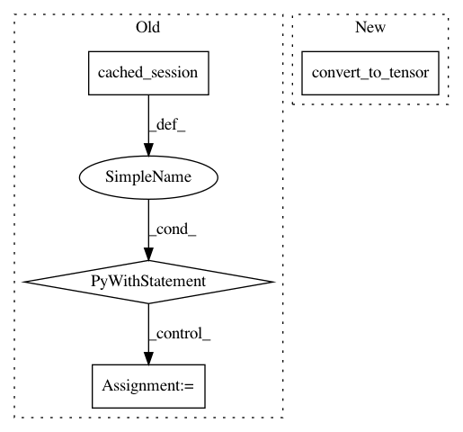

9fc32f79c4d5968274cca37a29cf6611f4808a8c,tf_agents/utils/common_test.py,IndexWithActionsTest,testTwoOuterDimsUnknownShape,#IndexWithActionsTest#,198
Before Change
q_values = tf.placeholder(tf.float32, shape=[None, None, None])
actions = tf.placeholder(tf.int32, shape=[None, None])
values = common.index_with_actions(q_values, actions)
with self.cached_session() as sess:
self.assertAllClose(
[[51, 52]],
sess.run(values,
feed_dict={q_values: [[[50, 51], [52, 53]]],
actions: [[1, 0]]}))
class PeriodicallyTest(tf.test.TestCase):
Tests function periodically.
@test_util.run_in_graph_and_eager_modes()
After Change
def testTwoOuterDimsUnknownShape(self):
q_values = tf.convert_to_tensor(np.array([[[50, 51], [52, 53]]],
dtype=np.float32))
actions = tf.convert_to_tensor(np.array([[1, 0]], dtype=np.int32))
values = common.index_with_actions(q_values, actions)
self.assertAllClose([[51, 52]], self.evaluate(values))
In pattern: SUPERPATTERN
Frequency: 3
Non-data size: 4
Instances
Project Name: tensorflow/agents
Commit Name: 9fc32f79c4d5968274cca37a29cf6611f4808a8c
Time: 2019-02-05
Author: oars@google.com
File Name: tf_agents/utils/common_test.py
Class Name: IndexWithActionsTest
Method Name: testTwoOuterDimsUnknownShape
Project Name: tensorflow/agents
Commit Name: 14c08e3da6965eccee804f53ecdf8ecd0c1656f2
Time: 2019-02-04
Author: oars@google.com
File Name: tf_agents/utils/nest_utils_test.py
Class Name: NestedTensorsTest
Method Name: testGetOuterShapeDynamicShapeNotBatched
Project Name: tensorflow/agents
Commit Name: 14c08e3da6965eccee804f53ecdf8ecd0c1656f2
Time: 2019-02-04
Author: oars@google.com
File Name: tf_agents/utils/nest_utils_test.py
Class Name: NestedTensorsTest
Method Name: testGetOuterShapeDynamicShapeBatched